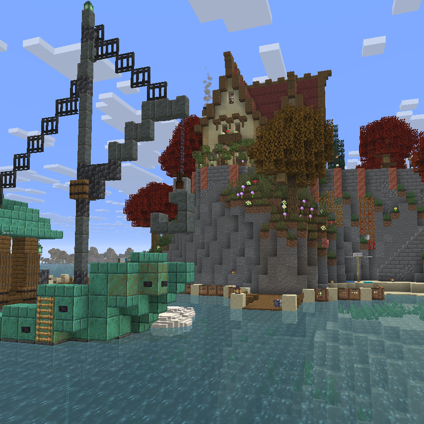

The Fall Feast Fishing Tournament 2025
Golem_Leader - November 17th, 2025
A chill is setting over Sky Eden... and with it, a strange emergence of fish (?)
We've had a few different fishing plugins in our past, but all of them have either broken with the times or simply weren't all that great and left things to be desired. Now, with the power of a strange brass contraption fished out of the sea, we have opened the biodiversity floodgates of Sky Eden once more!
That's right, this is our first-annual Fall Feast Fishing Tournament, which will take place at the tournament islands found at /warp fishingtourney. You will have until December 1st to participate, in which you can find all of the following:
- Nearly 100 new fish! When you reel one in, it will be placed in your new /fishbag. From there, you can sell those fish (each have a monetary value shown), strip them down to their base fish (for stackable fish), or view your Fishing Bestiary, which will tell you where to find new fish, their rarities, and what the biggest fish you've caught of each type weighed. (There may also be a reward for being the first to complete your Bestiary, but that is not tied to this event).
- The event fishes: the turkey fish and the turducken fish! These are exclusive to the autumn biome (the new biome for the event), and can only be caught for the event duration.
- New fishing enchantments! There's Master Angler, which reels exclusively fish (no trash or treasure), and Another Man's Treasure, which reels exclusively junk (as well as some special enchantment-only junk).
- A competitive tournament, where your goal is to get the most points by the end of the event! Turkey fish give one point, and turducken fish give 7. The first-place winner receives a VIP Rank-Up Coupon and the golden Fall Feast trophy. Second place receives 3 donor rune coupons and the silver trophy, and third place receives 1 donor rune coupon and the bronze trophy.
- A cooperative event, where your goal is to deliver 500 Copper Gears to the NPC in the copper boat off the shore of the main autumn island. A gear donated by one person is a gear for everyone! There are milestone goals, but the final milestone unlocks the enchantments listed above as obtainable through enchanting tables, as well as a new mob (?????)
- A new fishing-themed brew and quest!
- A mainstay for the Tournament Islands, a Trader who will trade fish for Fishing Tickets, which can be used to obtain special items (some event-specific). The fishing tickets are not year or event-locked, meaning you can use these tickets in a hypothetical future tournament.
- Some lore that will send you reeling! (Sorry having a pun contest with soulfire__ right now and it's washing into this post)
Happy fishing Edenites, and I'll look forward to seeing you with the start of our Christmas event just around the corner! If you're looking for a more visual breakdown of everything we just talked about, we'll likely have a video up in a day or two for it.
- Golem_Leader, owner
